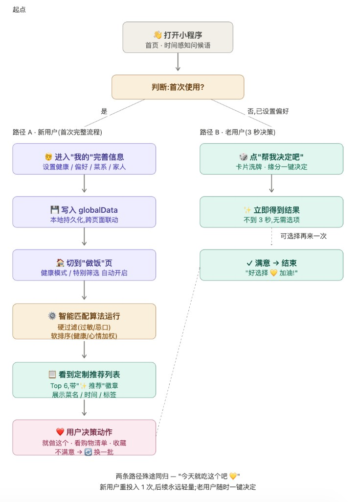
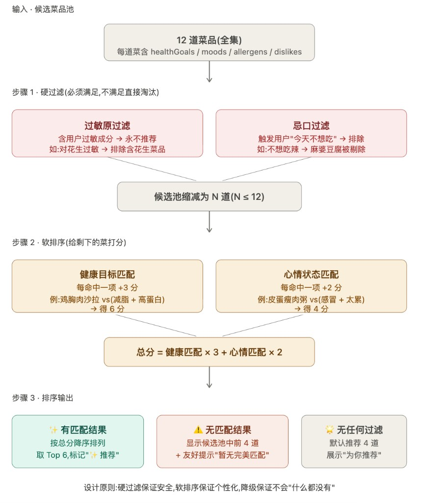

EXPLORE
体验小程序 or 了解详情
✨
30 秒了解这个项目
WHAT
从 0 到 1 上线的微信小程序
HOW
用 Claude 做 Vibe Coding，2 天完成 · 目前备案上线中
WHY
验证「非工程背景能否做出 C 端产品」
SHOWS
用户洞察 · 产品决策 · AI 协作 · 工程理解 · 上线交付
02
用户路径 · 核心功能 🚶
两条路径殊途同归——新用户重投入 1 次，老用户随时一键决定，共享同一份偏好画像。

路径 A
新用户 · 完整流程
「我的」完善信息 → 写入 globalData → 切到「做饭」自动开启匹配 → 看到 Top 6 定制推荐。投入 1 次，后续永远轻量。
路径 B
老用户 · 3 秒决策
直接点「帮我决定吧」→ 卡片洗牌 · 缘分一键决定 → 不到 3 秒得到结果。为「不想再做选择」的状态准备。
03
智能匹配算法 ⚙️
产品决策落到代码的关键一步——把"健康"和"心情"做不同权重；偏好过苛时还有降级方案，避免空白页。

硬过滤
过敏成分 + "今天不想吃"——永不出现。保证安全是底线。
软排序
健康 ×3（长期偏好） + 心情 ×2（临时状态）。权重设计反映优先级。
降级
偏好太苛无匹配 → 候选池前 4 道 + 友好提示。不会"什么都没有"。
核心原则：硬过滤保证安全，软排序保证个性化，降级保证永远有选择。